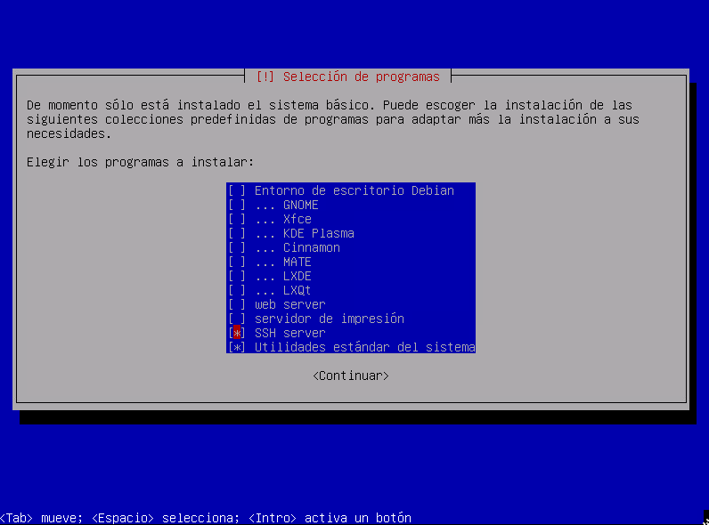
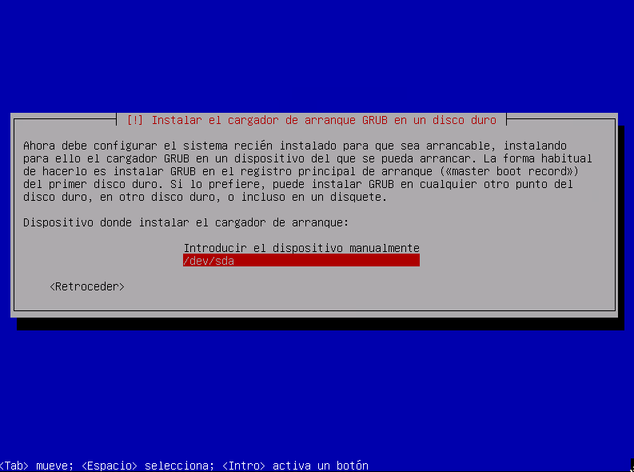

Quizás te estas planteando el montarte un servidor con debian, pero no sabes muy bien por donde empezar. Si has instalado alguna vez debian, la imagen contiene varias versiones de escritorio, pero… ¿Dónde está la versión de servidor?

Si no has instalado nunca debian, la instalación es muy simple, igual que el resto de distros. La imágen la encontrarás en https://www.debian.org. Una vez grabada en un CD-ROM o USB, al inicio te da a elegir que tipo de instalador deseas utilizar, uno gráfico u otro para terminal. Ambos tienen los mismo pasos.
Llegando casi al final de la instalación, nos pregunta que tipo de escritorio queremos utilizar para Debian.
Tendremos que seleccionar la opción SSH server.

Ahora si, al final, nos pregunta donde instalar el cargador del GRUP. Tiene que estar en una partición, que será el primer lugar donde accederá nuestra máquina y así podrá arrancar Debian.

Ya tenemos nuestro servidor y tal como hemos hecho en los pasos anteriores, en lugar de instalar un entorno de escritorio, hemos instalado un servidor SSH, para acceder a nuestro servidor.
Para conocer y acceder al servidor, necesitamos conocer la ip.
ip a
Ahora que ya la conocemos, podremos acceder a nuestro servidor. Para que con el tiempo nuestro router no cambie la ip y nos volvamos locos averiguando que pasa, debemos otorgarle una ip fija o estática.
En Debian, cuando tenemos que instalar un programa o modificar algo del sistema, tenemos que entrar como usuario root, no funciona igual que en Ubuntu, Raspbian, etc…
Aunque se que instalando sudo y modificando el archivo /etc/sudoers con visudo, podemos utilizar sudo igual que en ubuntu, he decidido no hacerlo por seguridad, ya que debian no lo recomienda.
Pero cuando he ido a instalar Syncthing, al añadir los repositorios de Syncthing, debian me pedía el poner sudo y como debian-server viene con lo justo, no tiene ni el comando sudo instalado.
Así que si necesitas instalarlo:
apt-get install sudo
Tener un servidor con Debian está genial, ya que Debian es muy estable, traé solo lo justo para funcionar y poco a poco vas construyendo tu servidor con solo aquello que necesitas.
Hay unas pequeñas diferencias respecto a Ubuntu o Raspbian, como lo que explicaba en el apartado anterior, pero en poco tiempo te acabas adaptando.
Publicado por Angel el sábado 28 diciembre del 2019
También te puede interesar:
Powered by org-bash-blog
Writing in orgmode whith emacs

Este obra está bajo una licencia de Creative Commons Reconocimiento-NoComercial-CompartirIgual 4.0 Internacional.